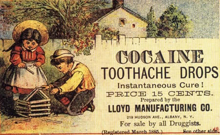
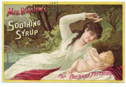
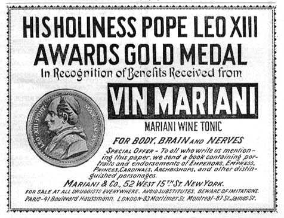
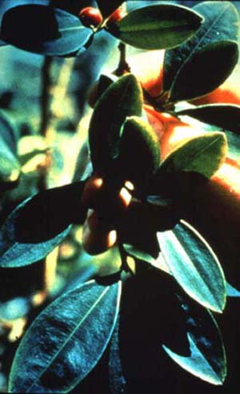
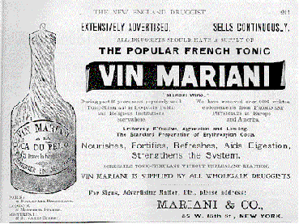
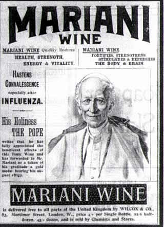
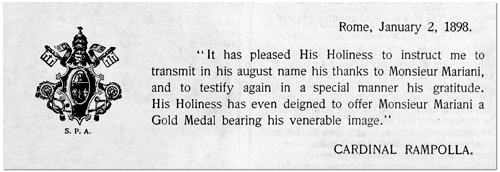

Produits de consommation courante contenant de la cocaïne ou de la morphine
Le principe actif du Vin Mariani, dénommé "Mariani Wine" en Angleterre et aux Etats-Unis, était l'
Erythroxylon Coca
. Vers les années 1890 et dans la première moitié du XXème siècle, ce fut une des spécialités pharmaceutiques les plus connues. Il était réputé tonique et stimulant pour le corps, le cerveau et les nerfs. Ses indications ont varié au fil des ans, mais elles concernaient généralement la grippe, la nervosité, l'anémie, l'insomnie et diverses affections de l'estomac, de la gorge et des poumons. Sous forme de
cachets
, on la recommandait aux chanteurs pour adoucir la voix et sous forme de
sirop
contre les rages de dents, spécialement chez les enfants ( par exemple, les "Cocaïne Toothache Drops" de la Lloyd Manufacturing Company de New York). On l'utilisait aussi pour la prévention et le traitement d'un certain nombre de maladies contagieuses.
Si la coca n'était généralement pas considérée comme pouvant générer de graves difficultés, on était plus réservé vis à vis de la
cocaïne
, introduite en médecine générale à partir de 1884. Plusieurs années après, on commença à produire des rapports sur son usage abusif et un nouveau syndrome, le cocaïnisme apparut.
Malgré cela, écrit Louis Cotinat dans "Le Vin Mariani, in Bull. Soc. archéol., hist. et artistique, Vieux Papiers, 1977, 537) les "propriétés revigorantes de la cocaïne en firent aux Etats-Unis l'ingrédient favori
Parmi d'autres médications de la "Belle époque" susceptibles de créer des addictions, on trouvait, outre la cocaïne:



Le vin Mariani: réclames pour les Etats-Unis. la plante coca
Vins médicinaux et vin de coca
Le Vin Mariani fit son apparition sur le marché français juste après la Commune,
en 1871
.
Celui qui devait y attacher son nom,
Angelo François Mariani
, le mit au point avec l'aide d'un médecin,
Charles Fauvel
, alors qu'il travaillait dans une pharmacie à Paris. Fauvel fut l'un des premiers à utiliser la cocaïne pour ses propriétés anesthésiques dans le traitement des maladies du nez et de la gorge. L'idée d'ajouter de la coca à du vin n'était pas nouvelle: la cocaïne et l'alcool se combinent en donnant une substance bien plus active, le coca-éthylène. Le
Vin de Coca
fut inscrit pour la première fois au Codex pharmaceutique français en 1884, mais on le trouvait en France et dans d'autres pays depuis longtemps déjà.
Les
vins médicinaux
étaient très répandus en France et l'édition 1880 de l'"Officine" de Dorvault en mentionne
154 sortes
.
|
 Le pape Léon XIII, un fervent adepte du Vin Mariani |
 Attestation de remise d'une médaille par Léon XIII
Rome, 2 janvier 1898
|
La formule du vin Mariani était conçue de façon
Ce vin contenait à l'état naturel "environ 11% d'alcool et les justes proportions de tanin, de fer, de sels et d'acides essentielles à un mélange idéal avec la coca".